akuu mungkin belum jadi orang yang paling hebat buat kamuu. Tapii ada satu hal yang pengen akuu usahain terus, bikin kamuu ngerasa bahagia, ngerasa aman, sama punya tempat buat cerita. Jadi kalau nanti ada hari yang berat, jangan jalan sendirian yaaa. Ada akuu di samping kamuu ❤️
Hari sederhana yang menjadi awal dari cerita yang ingin terus kita tulis bersama.
—
hari bersama sejak 1 Juli 2026
—bulan
—minggu
—jam
Ketuk untuk peluk lagi ♡
“Aku tidak tahu semua hal yang menunggu di depan, tapi aku ingin terus menemukan jawabannya bersamamu.”
Terima kasih sudah menjadi bagian dari hari-hariku. Semoga kita selalu punya ruang untuk tertawa, belajar, saling menguatkan, dan menciptakan kenangan baru.
— untuk Shantik, selalu ♡
little pieces of us
Galeri kenangan.
Tempat kecil untuk foto dan video favorit kita. Setiap perjalanan, candaan, dan hari sederhana punya tempatnya sendiri di sini.
a page from our little diary ♡
Bukan cuma foto. Ini potongan-potongan hari yang pernah kita lewatin bareng.
09album kecil 51 kenangan
← geser buat lihat album lainnya →
✧ every little moment, kept with love ♡
Foto dan video kenangan ini tersimpan langsung di website. Kirim lagi kenangan dari folder Drive lainnya kapan saja, nanti kita tambahkan ke album yang sama.
Di Hari Kamuu Dilahirkan
18 Juni 2026 · Bake in Time, Grand City Surabaya
Di antara banyaknya hari yang pernah akuu lewatin, ada satu hari yang ingin akuu simpan lebih lama.
Senyum Kamuu, Doa Akuu ♡
18 Juni 2026 · Bake in Time, Grand City Surabaya
Hari ketika akuu bisa ikut merayakan hadirnya kamuu di dunia. Karena tanpa kamuu sadari, kehadiran kamuu juga jadi salah satu hal terindah dalam hidup akuu.
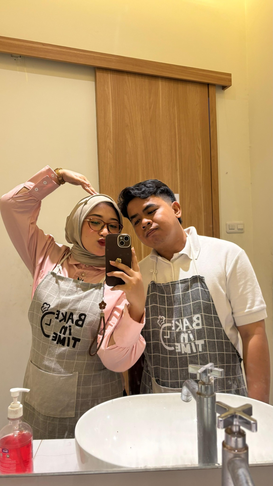
Satu Hari yang Akuu Simpan ♡
18 Juni 2026 · Bake in Time, Grand City Surabaya
Satu foto kecil dari hari yang pengen akuu inget terus.
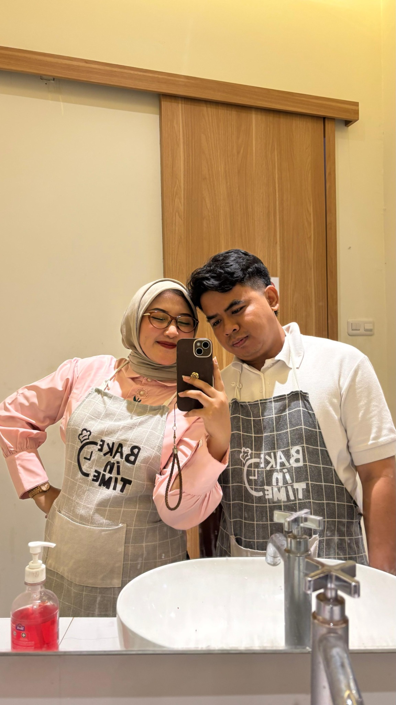
Kita, dan Cerita Hari Itu ♡
18 Juni 2026 · Bake in Time, Grand City Surabaya
Ada akuu dan kamuu, sama kenangan yang rasanya hangat kalau diinget lagi.
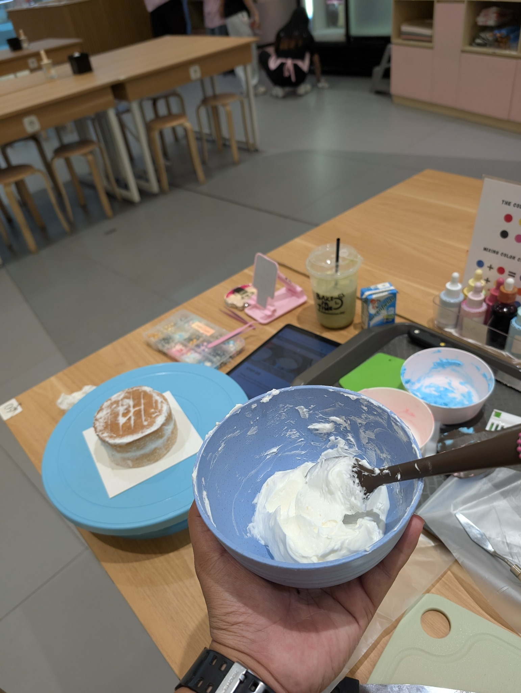
Di Balik Manisnya Kue ♡
18 Juni 2026 · Bake in Time, Grand City Surabaya
Sebelum jadi kue yang manis, ada proses kecil yang kita lewatin. Akuu seneng bisa nyimpen bagian ini juga, Shaa.
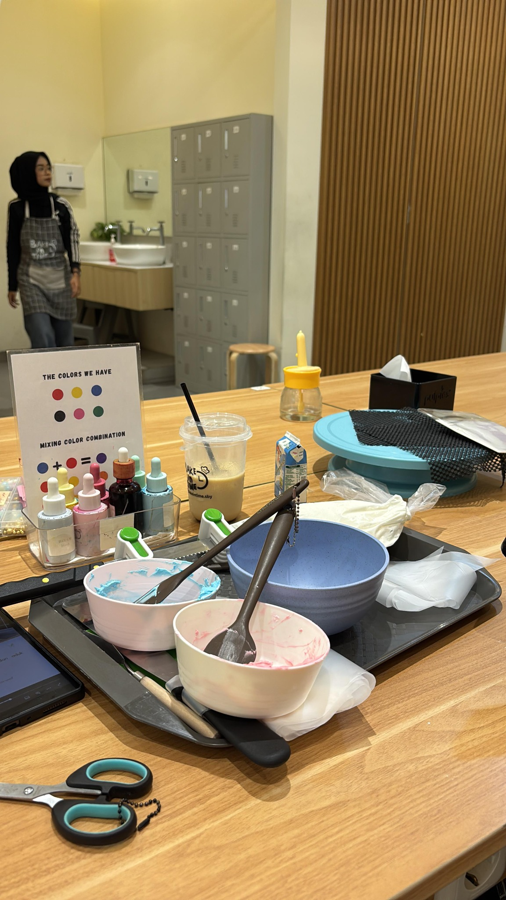
Warna-Warni Hari Ituu ♡
18 Juni 2026 · Bake in Time, Grand City Surabaya
Ada warna, ada berantakan kecil, dan ada cerita tentang kita. Hal sesederhana ini pun pengen akuu inget, yaaa.
Hari Itu Bergerak Lagi ♡
18 Juni 2026 · Bake in Time, Grand City Surabaya · Video
Sedikit gerak, sedikit tawa, dan satu hari yang ingin akuu simpan lebih lama.
Tentang Jalan dan Tujuan
Bersama teman-teman
Ada banyak jalan yang belum pernah kita lewati, dan banyak tempat yang belum sempat kita datangi.
Langkah Kita yang Sama ♡
Batu · Hari liburan kita
Tapii akuu nggak pernah terlalu khawatir soal tujuan, selama langkah kecil kita masih menuju arah yang sama. Karena buat akuu, perjalanan paling indah adalah perjalanan yang ada kamuunya.
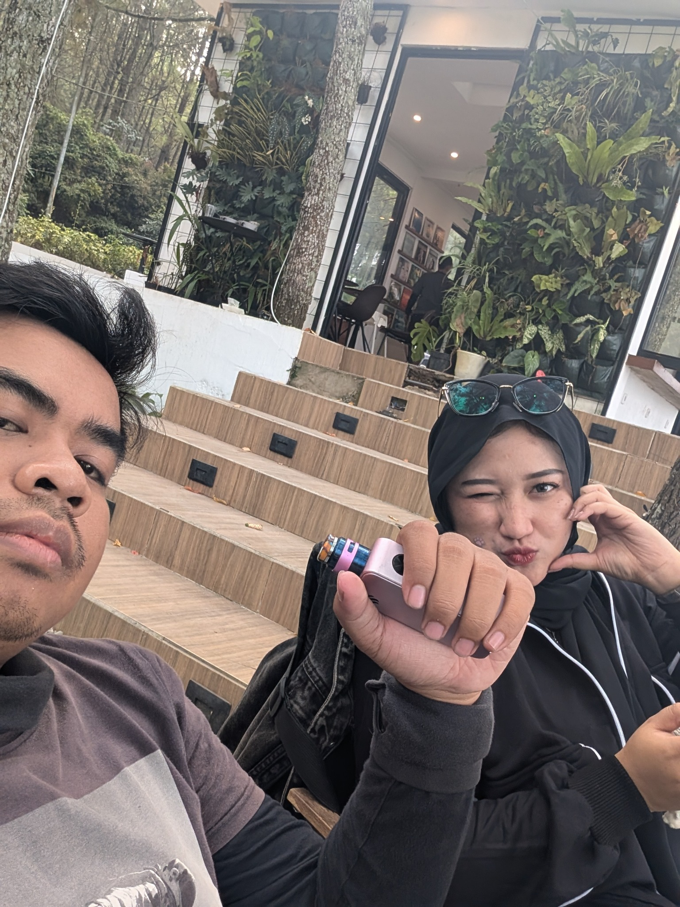
Di Sela Jalan, Ada Kamuu ♡
5 Juli 2026 · Liburan Batu
Di antara langkah dan cerita hari itu, ada senyum kamuu yang pengen akuu simpan lebih lama.
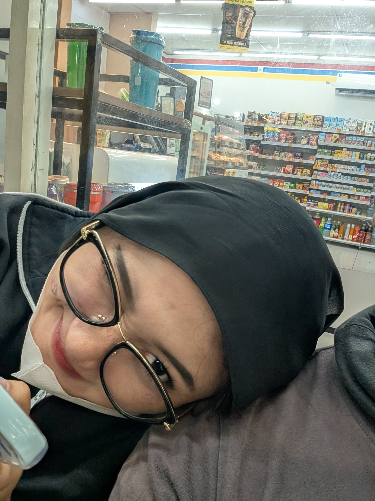
Bersandar Sebentar, Berjalan Lagi ♡
5 Juli 2026 · Liburan Batu
Kadang yang paling akuu inget bukan tempatnya, tapii saat kamuu bersandar dan semuanya terasa lebih hangat.
Di Setiap Jarak, Ada Kita
10 Juli 2026 · Surabaya ke Cilegon · Rosalia Indah
Perjalanan itu bukan cuma tentang berapa jauh kita pergi, tapii tentang siapa yang memilih untuk tetap tinggal di samping kita.
Genggam Tangan Kamuu ♡
10 Juli 2026 · Dalam perjalanan
Hari itu akuu nemenin kamuu bertemu ayah, dan diam-diam akuu berharap, semoga dalam setiap perjalanan hidup kamuu nanti, akuu masih diberi kesempatan buat menggenggam tangan kamuu.
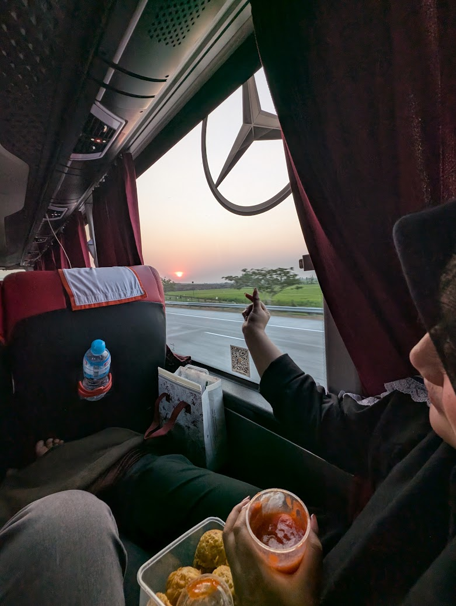
Senja Kecil di Tengah Perjalanan ♡
10 Juli 2026 · Perjalanan Surabaya–Cilegon
Langit sore yang menemani perjalanan kita. Di luar jendela, matahari perlahan turun, sementara akuu bersyukur masih bisa berada di samping kamuu.
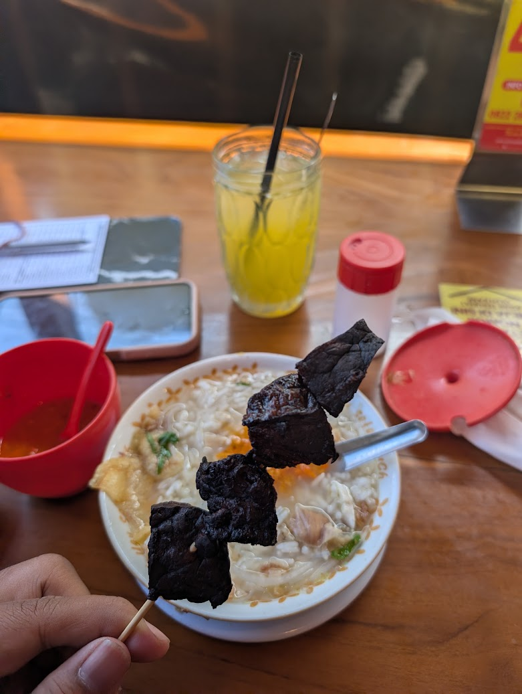
Singgah Sebentar, Cerita Bertambah ♡
10 Juli 2026 · Perjalanan Surabaya–Cilegon
Di sela perjalanan yang panjang, ada waktu sebentar buat berhenti dan makan. Hal kecil yang jadi bagian dari cerita kita, yaaa.
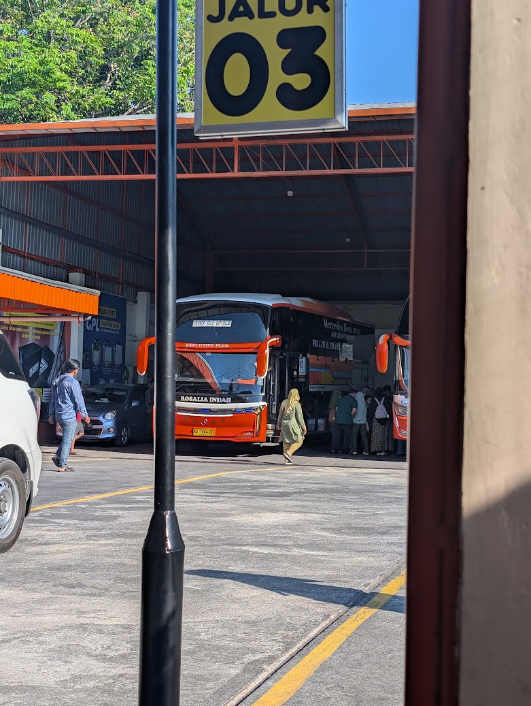
Dari Sini Kita Berangkat ♡
10 Juli 2026 · Perjalanan Surabaya–Cilegon
Dari sebuah tempat keberangkatan, kita memulai cerita yang jaraknya jauh. Akuu masih inget perjalanan yang kita lewatin bersama.
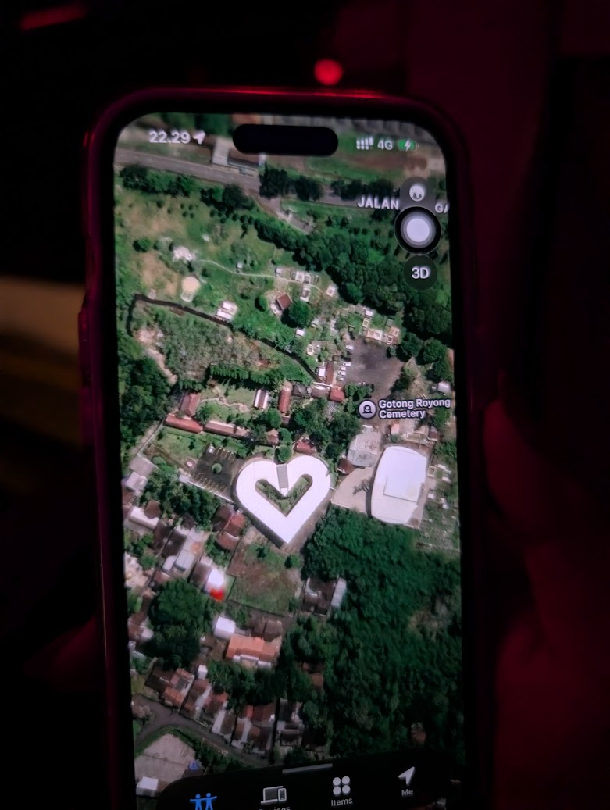
Bahkan di Peta Ada Hati ♡
10 Juli 2026 · Perjalanan Surabaya–Cilegon
Lucu yaaa, di tengah perjalanan kita nemu bentuk hati yang nggak disangka. Rasanya seperti ada kenangan kecil yang sengaja menunggu untuk ditemukan.
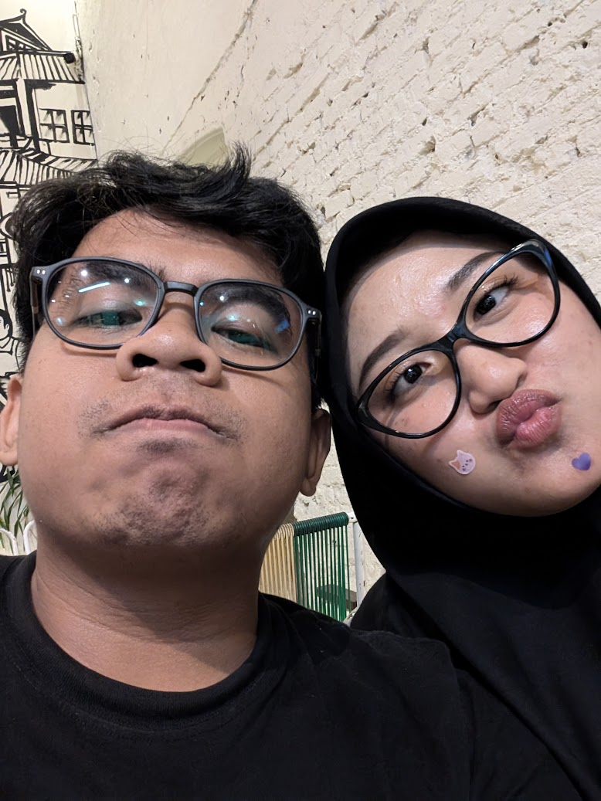
Kalau Waktu Bisa Berhenti
20 Agustus 2026 · The Reds
Ada hari-hari yang rasanya pengen akuu lipat rapi dan simpan, karena di dalamnya ada kamuu, ada akuu, dan ada tawa yang nggak mau cepat selesai.
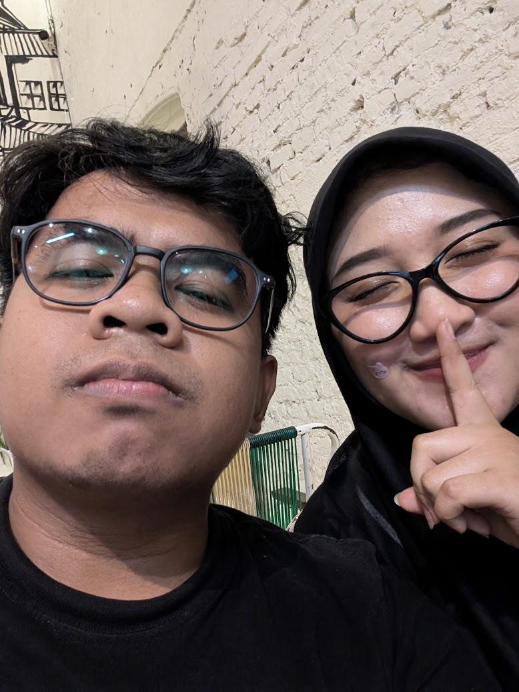
Rahasia Kecil Kita ♡
20 Agustus 2026 · The Reds
Senyum kecil, isyarat lucu, dan momen sesederhana ini aja udah cukup bikin hati akuu hangat kalau diinget lagi.
Jempol Buat Hari Itu ♡
20 Agustus 2026 · The Reds
Receh, spontan, dan nggak dibuat-buat. Justru hal-hal kecil kayak gini yang bikin satu hari terasa spesial buat akuu.
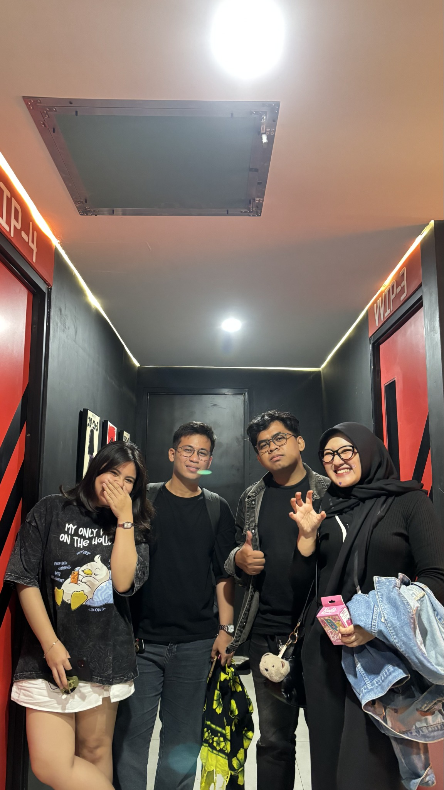
Satu Frame, Banyak Tawa ♡
20 Agustus 2026 · Double date bareng teman-teman
Nggak cuma tentang tempatnya, tapi tentang orang-orang yang bikin malam itu terasa hidup, penuh canda, dan susah dilupain.
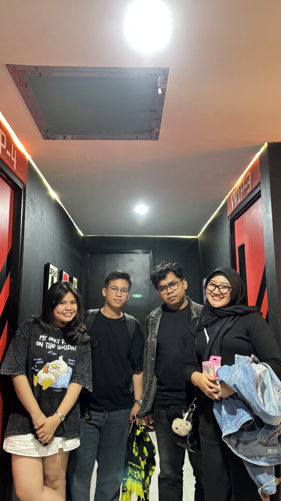
Senyum yang Akuu Inget ♡
20 Agustus 2026 · Double date bareng teman-teman
Di antara banyak foto, ada yang rasanya sederhana banget, tapi justru itu yang bikin akuu pengen lihat lagi nanti, lalu senyum sendiri.
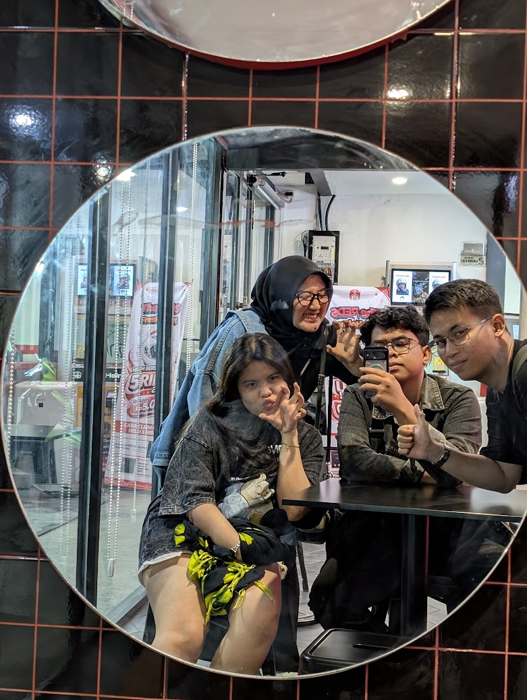
Di Cermin, Ada Cerita ♡
20 Agustus 2026 · The Reds
Kadang kenangan datang dari sudut yang nggak disangka. Bahkan dari pantulan cermin pun, cerita kita tetap kelihatan hangat.
The Reds, dan Kamuu ♡
20 Agustus 2026 · The Reds
Kalau suatu saat akuu lupa detail harinya, semoga akuu tetap inget perasaan hangat waktu berdiri di samping kamuu malam itu.
Suatu Hari, Tentang Rumah Kita
9 September 2026 · Kamar Shasa
Hari itu kita cuma memasang wallpaper di kamar kamuu. Tapii entah kenapa, akuu jadi membayangkan suatu hari nanti, kita sibuk menata tempat yang bisa kita sebut rumah.
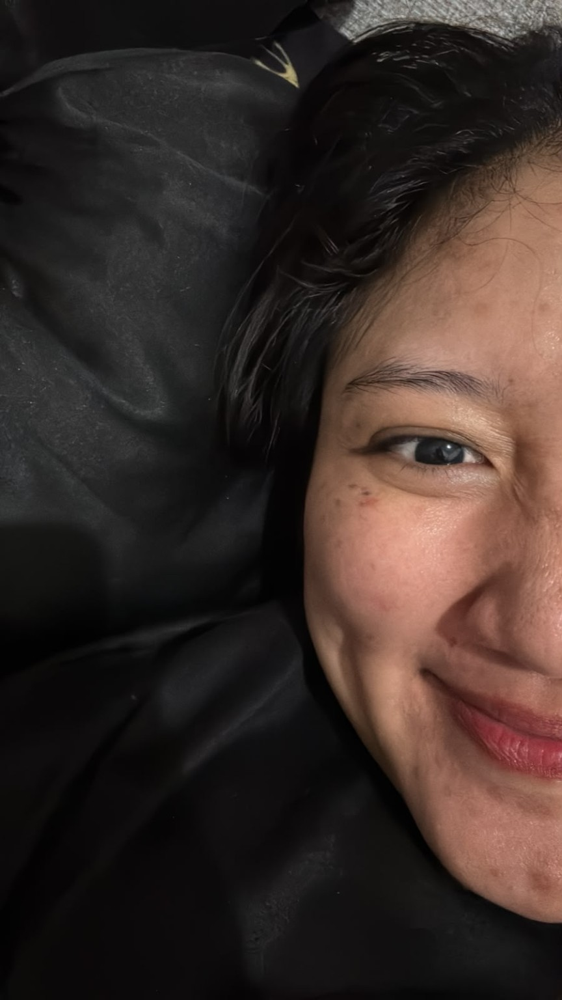
Ada Akuu, Ada Kamuu ♡
9 September 2026 · Kamar Shasa
Bukan harus rumah yang besar atau mewah, cukup tempat sederhana yang di dalamnya ada akuu, ada kamuu, dan banyak cerita yang kita bangun bersama. ❤️
Sedikit Demi Sedikit, Jadi Rumah ♡
31 Agustus 2026 · Kamar Shantik
Lihattt, pelan-pelan dindingnya berubah. Rasanya seneng banget bisa ikut jadi bagian dari cerita kecil di kamar kamuu.
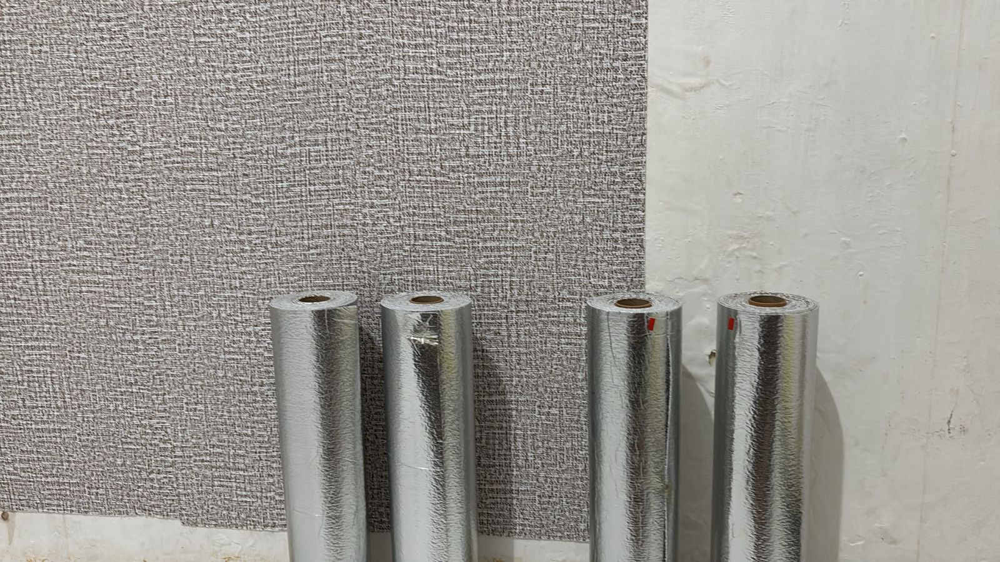
Dari Gulungan Kecil ♡
31 Agustus 2026 · Persiapan wallpaper
Sebelum semuanya rapi, ada bahan-bahan yang disiapin. Hal sederhana yang pengen akuu inget, karena kita pernah ngerjainnya bareng.
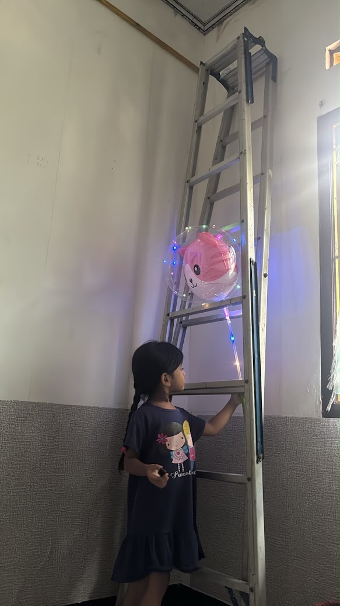
Ada Cerita di Tiap Sudut ♡
5 September 2026 · Kamar Shantik
Bukan cuma dinding yang berubah, tapii kamar kamuu makin penuh cerita. Ada hal-hal kecil yang bikin akuu senyum kalau lihat lagi.
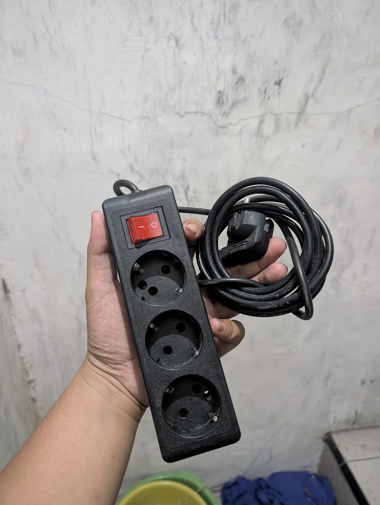
Di Balik Semua Persiapan ♡
9 September 2026 · Persiapan kamar
Ada alat-alat kecil yang ikut nemenin prosesnya. Nggak selalu indah di foto, tapi semuanya bagian dari kenangan kita.
Satu Foto, Dua Senyum ♡
1 September 2026 · Foto berdua
Di sela kesibukan, kita masih sempet foto lucu. Akuu pengen nyimpen momen kayak gini sebanyak-banyaknya, Shaa.
Di Cermin, Ada Kita ♡
10 September 2026 · Kebun bunga matahari, Batu
Kadang sebuah cermin kecil bisa menyimpan cerita yang besar. Di antara bunga matahari, ada akuu dan kamuu yang lagi menikmati hari bareng.
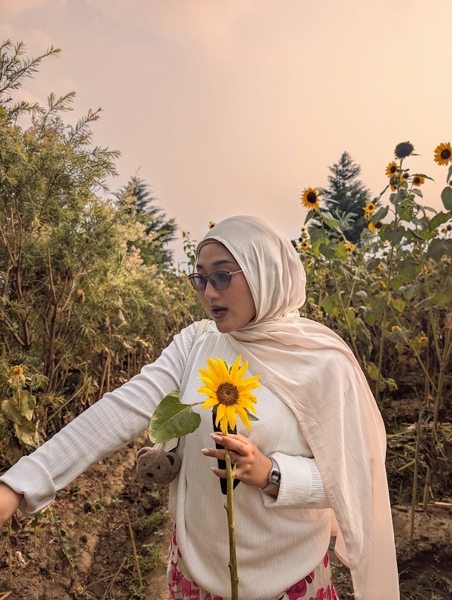
Bunga yang Kamuu Pilih ♡
10 September 2026 · Kebun bunga matahari, Batu
Akuu suka lihat kamuu menikmati hal-hal sederhana. Satu bunga matahari di tangan kamuu rasanya jadi kenangan yang hangat banget buat akuu.
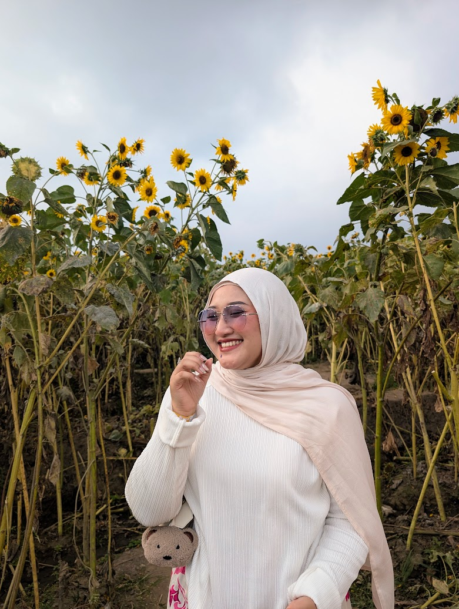
Senyum di Antara Bunga ♡
10 September 2026 · Kebun bunga matahari, Batu
Di antara banyaknya bunga yang mekar, ada satu senyum yang paling pengen akuu inget terus. Senyum kamuu, Shaa.
Satu Sore, Kita Berdua ♡
10 September 2026 · Kebun bunga matahari, Batu
Bukan tentang seberapa jauh kita pergi, tapii tentang bisa berada di samping kamuu, bahkan saat cuma duduk dan lihat bunga-bunga.
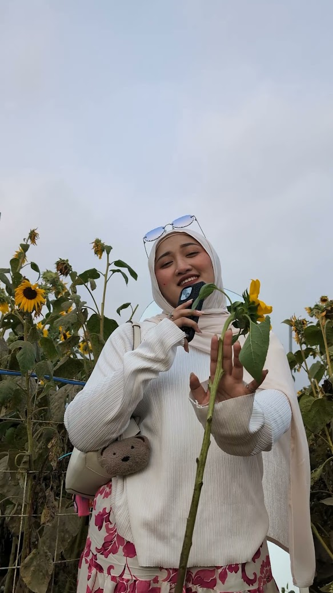
Mekar Pelan-Pelan ♡
10 September 2026 · Kebun bunga matahari, Batu
Semoga cerita kita juga tumbuh pelan-pelan, seperti bunga yang selalu mencari cahaya. Nggak harus sempurna, asal kita mau terus saling menjaga.
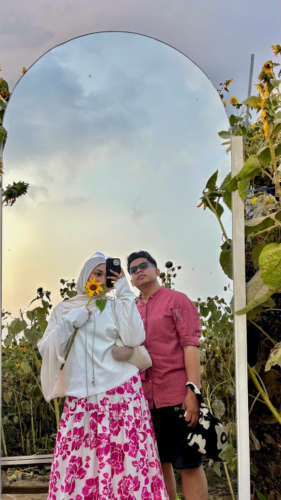
Bayangan Kita di Antara Bunga ♡
10 September 2026 · Kebun bunga matahari, Batu
Dari sebuah pantulan cermin, akuu melihat kita berdiri di tengah bunga matahari. Foto sederhana yang bikin akuu pengen mengulang sore itu bareng kamuu, Shaa.
Sore Itu Bergerak Lagi ♡
10 September 2026 · Kebun bunga matahari, Batu · Video
Ada momen yang rasanya nggak cukup disimpan dalam satu foto. Lewat video ini, akuu bisa mengingat lagi suasana liburan kita di antara bunga-bunga.
Self-care Bareng Kamuu ♡
4 Oktober 2026 · Self-care bareng Shasa
Bukan hari yang mewah, cuma akuu dan kamuu yang lagi coba perawatan wajah bareng. Tapii lucunya, kenangan ini bikin akuu senyum sendiri.
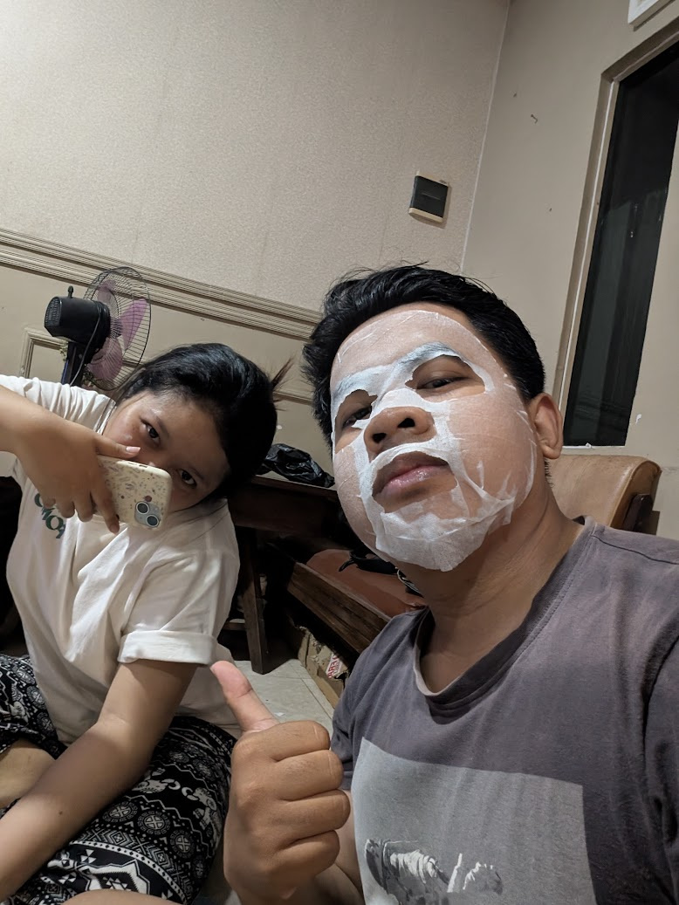
Masker Wajah dan Senyum Kamuu ♡
4 Oktober 2026 · Self-care bareng Shasa
Shasa yang nyiapin sheet mask buat akuu, sementara akuu malah sibuk gaya dan kamuu ikut bercanda. Terima kasih udah perhatian sama hal-hal kecil, Shaa.
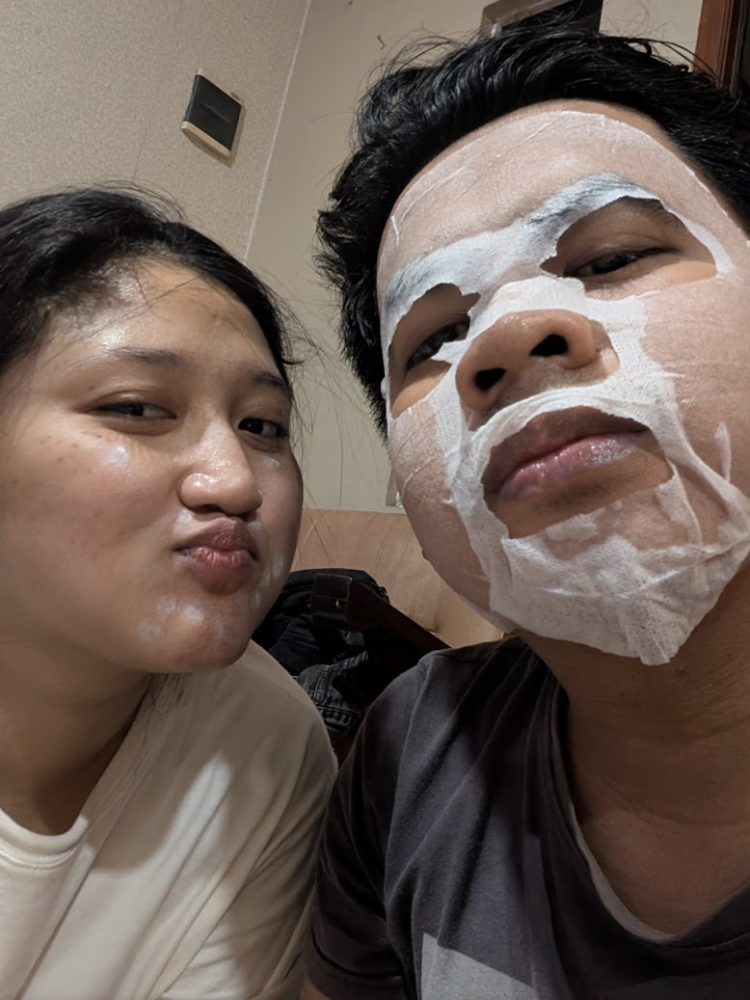
Satu Pose Lagi, Yaaa ♡
4 Oktober 2026 · Self-care bareng Shasa
Di antara perawatan dan canda kecil, kita sempat foto lagi. Muka akuu penuh masker, tapii rasanya hangat karena ada kamuu.
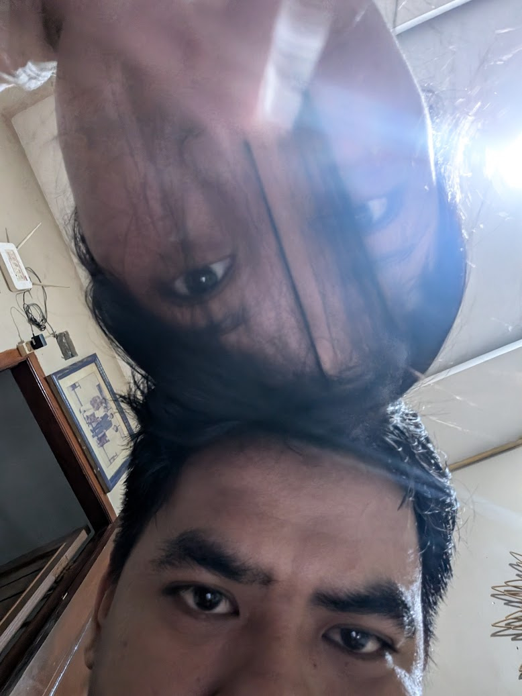
Tawa dari Sudut Tak Terduga ♡
4 Oktober 2026 · Self-care bareng Shasa
Foto yang agak random juga tetap akuu simpan. Soalnya kenangan kita nggak harus selalu rapi buat jadi sesuatu yang berharga.
Tangan yang Kamuu Rawat ♡
4 Oktober 2026 · Self-care bareng Shasa
Setelah wajah, kamuu bantu scrub tangan akuu juga. Sesederhana itu cara kamuu nunjukin perhatian, dan akuu pengen inget momen kecil ini.
Perawatan yang Jadi Kenangan ♡
4 Oktober 2026 · Self-care bersama · Video
Ada gerak, tawa, dan satu hari sederhana yang nggak pengen akuu lupain. Terima kasih udah mau nemenin dan ngerawat akuu, Shaa.
Senyum yang Bikin Betah ♡
5 November 2026 · Hulaan, Menganti
Di antara lampu warna-warni dan ramainya orang, akuu malah paling suka lihat kamuu senyum, Shaa. Rasanya malam sederhana pun jadi istimewa.
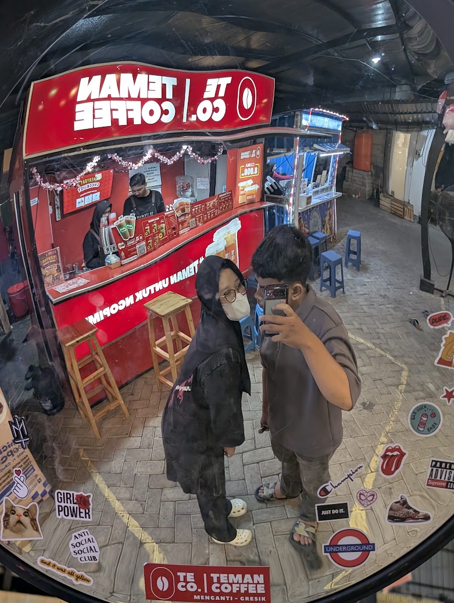
Cermin Kecil, Cerita Kita ♡
5 November 2026 · Hulaan, Menganti
Sempet-sempetnya kita foto di cermin, padahal cuma lagi keluar bareng. Tapii justru hal kecil begini yang selalu pengen akuu simpan.
Kalau Waktu Bisa Diulang ♡
5 November 2026 · Hulaan, Menganti
Nggak perlu malam yang sempurna buat bikin akuu bahagia. Asal masih bisa jalan, ketawa, dan pulang bawa cerita bareng kamuu, itu udah cukup banget.
Malam yang Dirayakan Bersama ♡
7 November 2026 · Ulang tahun teman
Hari itu kita datang buat ikut merayakan ulang tahun teman akuu. Di antara ramainya obrolan dan tawa, seneng rasanya karena kamuu ada di situ juga, Shaa.
Di Tengah Ramai, Ada Kita ♡
7 November 2026 · Ulang tahun teman
Di tengah banyak orang, akuu tetap punya satu tempat yang paling nyaman: dekat kamuu. Malam itu sederhana, tapii rasanya hangat banget.
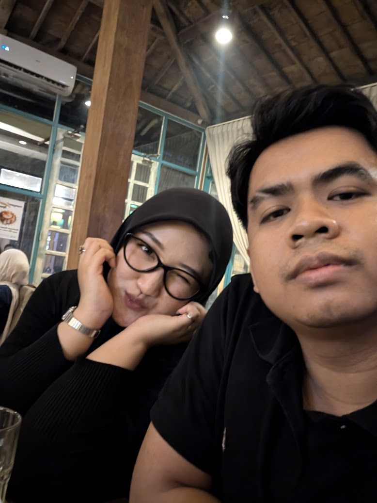
Senyum Kecil Kamuu ♡
7 November 2026 · Ulang tahun teman
Ada foto yang mungkin kelihatan biasa, tapi buat akuu berharga. Apalagi kalau ada senyum dan tingkah lucu kamuu yang selalu bikin hati akuu tenang.
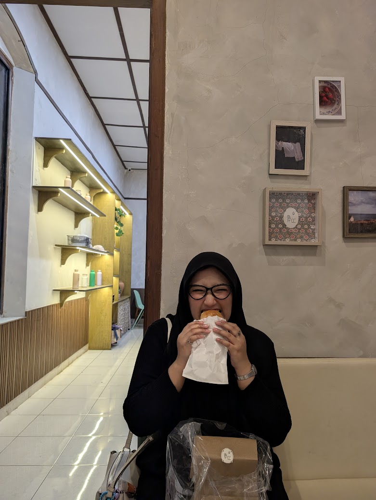
Satu Gigitan, Satu Kenangan ♡
7 November 2026 · Ulang tahun teman
Akuu juga suka momen kecil waktu kamuu menikmati makanan dan ketawa sendiri. Semoga nanti masih banyak hari-hari sederhana yang bisa kita lewatin bareng yaaa.
little moments, little games
Yuk, main sebentar ♡
Website ini bukan cuma buat dibaca. Pilih mood, lalu tekan Mesin Kejutan Cinta untuk menemukan pesan atau tantangan baru. ♡
01 · mood check
Hari ini kita lagi mode apa?
Pilih yang paling menggambarkan kalian sekarang.
02 · love surprise machine
Mesin Kejutan Cinta ✨
Butuh alasan buat senyum? Tekan tombolnya dan dapatkan pesan manis atau tantangan kecil untuk kalian.
Kejutanmu menunggu di sini… ♡
Belum ada kejutan dibuka
Shantik, semoga saat kamu membuka halaman ini, kamu ingat bahwa hubungan kita bukan tentang harus selalu sempurna. Yang penting, kita tetap mau ngobrol, belajar, ketawa bareng, dan memilih untuk saling mengusahakan. Kalau hari ini berat, kita istirahat sebentar—bukan menyerah pada cerita kita. ♡
letters for every season
Buka surat saat kamu...
Empat amplop kecil untuk hari-hari dengan rasa berbeda. Pilih satu sesuai isi hatimu. 💌
a little love note
Surat kecil untukmu.
Tekan tombol di bawah untuk membuka pesan yang disimpan khusus untuk Shantik.
Untuk Shantik,
Terima kasih sudah hadir ♡
Aku mungkin tidak selalu pandai merangkai kata, tapi aku ingin kamu tahu kalau kehadiranmu berarti banyak buatku. Aku suka hal-hal sederhana yang jadi istimewa karena ada kamu di dalamnya.
Aku tidak menjanjikan hari-hari yang selalu sempurna. Tapi aku ingin terus belajar memahami kamu, mendengarkan ceritamu, merayakan bahagiamu, dan menghadapi hari sulit sebagai satu tim.
Semoga kita selalu punya alasan untuk saling memilih, bukan hanya saat semuanya mudah, tetapi juga saat kita perlu belajar lebih sabar dan dewasa. Mari kita isi halaman-halaman berikutnya dengan cerita yang baik.
Kalau suatu hari kamu lupa betapa berharganya dirimu, semoga halaman kecil ini mengingatkanmu: kamu disayangi, kamu berarti, dan aku bersyukur cerita kita dimulai.
Dengan sayang, orang yang memilihmu hari ini dan ingin terus mengusahakan kita ♡
one last little page
Halaman terakhir? Belum.
Karena kisah kita masih akan punya banyak halaman baru.
✿ ♡ ✧
Shantik, ada satu pesan lagi...
Terima kasih sudah mengisi halaman-halaman kecil ini. Ada sesuatu yang ingin kusampaikan.
Ketuk chibinya untuk pelukan kecil ♡
Dari semua gambar kecil ini, favoritku tetap cerita yang kita jalani bersama. ♡
Untuk semua hari yang sudah kita lewati dan yang belum datang: semoga kita terus punya keberanian untuk saling mendengar, belajar, bercanda, dan menyayangi. Aku bersyukur bisa menulis cerita ini bersamamu. Ini bukan akhir cerita kita, cuma akhir halaman website ini. ♡